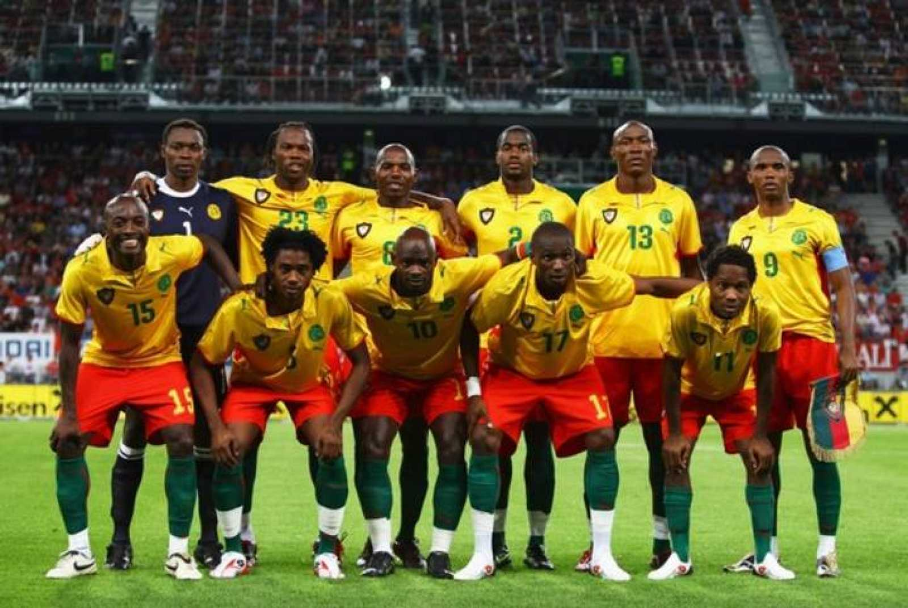

Ranking FIFA: 43° (octubre 2022).
¿Cómo se clasificó al Mundial? Venció en la llave decisiva a Argelia tras empatar 2-2 en el resultado global pero imponerse por sus dos goles como visitante.
Rendimiento en 2021 (G-E-P): 8-5-6 (20 GF, 19 GC, +1)
Rendimiento en 2022 (G-E-P): 7-1-4 (17 GF, 12 GC, +5)
André Onana; Collins Fai, Jean-Charles Castelletto, Michael Ngadeu, Nouhou Tolo; Martin Hongla, Samuel Oum Gouet, André-Frank Zambo Anguissa, Karl Toko Ekambi; Vincent Aboubakar, Eric Choupo-Moting.
Nacionalidad: camerunés
Edad: 45 años (llegará al Mundial con 46, los cumple en julio)
Contratado: 28 de febrero de 2022.
Récord en el cargo (G-E-P): 2-0-3.
Títulos en el cargo: Ninguno.
Victoria más notable: 2-1 sobre Argelia en la 3° Ronda de las Eliminatorias Africanas.
1930 Uruguay -
1934 Italia -
1938 Francia -
1950 Brasil -
1954 Suiza -
1958 Suecia -
1962 Chile -
1966 Inglaterra -
1970 México -
1974 Alemania -
1978 Argentina -
1982 España 17°
1986 México -
1990 Italia 7°
1994 Estados Unidos 22°
1998 Francia 25°
2002 Corea y Japón 20°
2006 Alemania -
2010 Sudáfrica 31°
2014 Brasil 32°
2018 Rusia -
